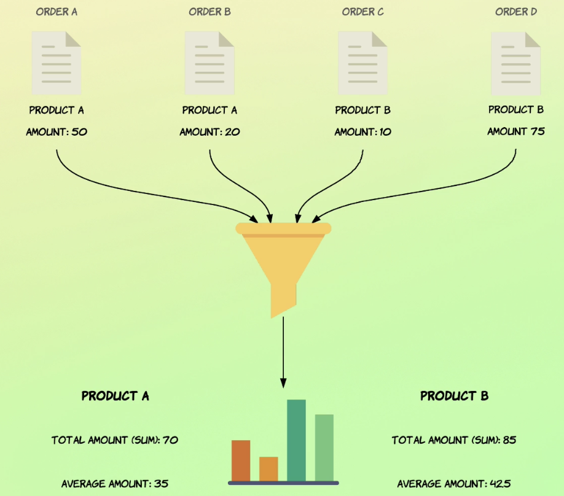
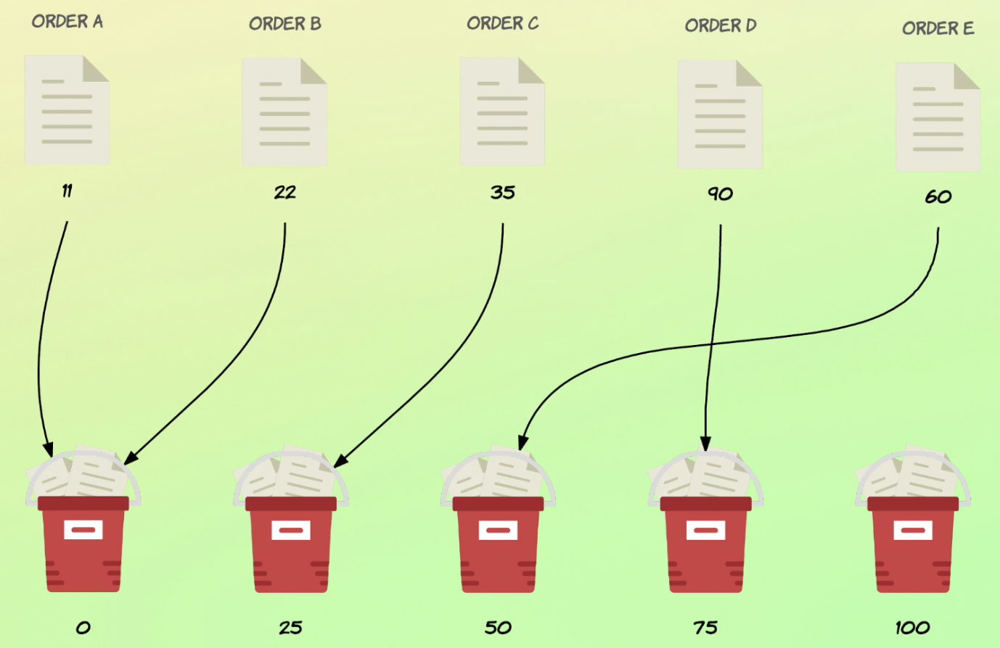

前言 這篇文章是出自於線上課程 Complete Guide to Elasticsearch 的所記錄的筆記。
這篇文章使用的 ES 版本為 7.16.2
這一篇文章要來介紹 Elastic 的 aggragation 如何使用。
正文 什麼是 aggregation? Aggregation 代表的是從一群資料中彙整成指標、數據或是可分析的資訊。

Aggregation 又能分成 single value aggregation & multi value aggreation。
aggregation 基本的格式
1 2 3 4 5 6 7 8 9 GET /_search { "size": 0, "aggs": { "<NAME>": { "<AGG_TYPE>": {} } } }
有哪些 aggregation? sum, avg, max, min 1 2 3 4 5 6 7 8 9 10 11 12 13 14 15 16 17 18 19 20 21 22 23 24 25 26 27 28 # 計算 total_amount 的 sum, avg, max, min # 並賦予它他們新的欄位 `total_sales` `avg_sales`, `max_sales`, `min_sales` GET /_search { "size": 0, "aggs": { "total_sales": { "sum": { "field": "total_amount" } }, "avg_sales": { "avg": { "field": "total_amount" } }, "max_sales": { "avg": { "field": "total_amount" } }, "min_sales": { "avg": { "field": "total_amount" } } } }
cadinality cadinality 用來計算有幾個 獨立 的值(近似值)。
1 2 3 4 5 6 7 8 9 10 { "size": 0, "aggs": { "total_salemen": { "cardinality": { "field": "salesman.id" } } } }
count count 用來計算有幾個值。
1 2 3 4 5 6 7 8 9 10 { "size": 0, "aggs": { "values_count": { "value_count": { "field": "total_amount" } } } }
stats 顯示該欄位相對應的 count & min & max & avg & sum
1 2 3 4 5 6 7 8 9 10 { "size": 0, "aggs": { "amount_stats": { "stats": { "field": "total_amount" } } } }
bucket aggregation 將資料分類成不同的 bucket。
1 2 3 4 5 6 7 8 9 10 11 12 13 14 15 16 17 18 # order - 排序 # missing - 當欄位不存在時，要用什麼名稱取代 # min_doc_count - 符合條件的最小數量要求，預設是 `1` { "size": 0, "aggs": { "status_terms": { "terms": { "field": "status.keyword", "missing": "N/A", "min_doc_count": 0 "order": { "_key": "asc" } } } } }
bucket aggergation 的 response 預設是 10 筆，超過的數量會以 sum_other_doc_count 表示。
Document count Term aggregation 找到的資料不一定是精準的，因為同一種資料被分在不同的 shard 當中，若是今天撈取的資料 size=3，欲撈取的資料在該 shard 中並不是前三名的，那麼該值就不會被納入計算。
舉例來說，假如現在要撈的資料是商品 A, B, F。從下圖可知，只有商品 A 是前三名，商品 B & F 在 shard B & C 中，並不都是前三名。因此，只有 shard A, B 的 商品 B 被計算; 同理可知，只有 shard A, C 的 商品 F 被計算，也就導致了實際撈到的值跟正確的值有差距的結果。
Nested Aggregation 在一個 agg 裡面，再包一層 agg
1 2 3 4 5 6 7 8 9 10 11 12 13 14 15 16 17 18 19 # 先將資料透過 status 分成不同的 buckets 後，再將每一組 bucket 內的資料欄位 `total_amount` 進行 stats 運算 GET /_search { "size": 0, "aggs": { "status_terms": { "terms": { "field": "status" }, "aggs": { "status_stats": { "stats": { "field": "total_amount" } } } } } }
過濾 - filter aggregation 先將符合條件的資料過濾出來再進行 aggreation。
1 2 3 4 5 6 7 8 9 10 11 12 13 14 15 16 17 18 19 20 21 22 23 # 將資料進行 filter range 的方式讓資料變少，再計算 avg GET /_search { "size": 0, "aggs": { "low_value": { "filter": { "range": { "total_amount": { "lt": 50 } } }, "aggs": { "avg_amount": { "avg": { "filed": "total_amount" } } } } } }
filters - 自定義 filter 透過 filters 來定義規則。
1 2 3 4 5 6 7 8 9 10 11 12 13 14 15 16 17 18 19 20 21 22 23 24 25 26 27 28 29 30 # 自定義一個 filter `my_filter`，並尋找 title 有 `pasta` & `speaghetti` 的資料 GET /_search { "size": 0, "aggs": { "my_filter": { "filters": { "filters": { "pasta": { "match": { "title": "pasta" } }, "spaghetti": { "match": { "title": "speaghetti" } } } }, "aggs": { "avg_rating": { "avg": { "field": "ratings" } } } } } }
Ranges aggregation 透過 range 的方式來達成 aggregation
range aggregation1 2 3 4 5 6 7 8 9 10 11 12 13 14 15 16 17 18 19 20 21 22 23 GET /order/_search { "size": 0, "aggs": { "amount_distribution": { "range": { "field": "total_amount", "ranges": [ { "to": 50 }, { "from": 50, "to": 100 }, { "from": 100 } ] } } } }
鍵值 to - 不包含，鍵值 from - 包含
date_range aggregation1 2 3 4 5 6 7 8 9 10 11 12 13 14 15 16 17 18 19 20 21 22 23 24 25 26 # 透過 format 來指定日期格式 # 透過 key 來指定輸出欄位名稱 GET /order/_search { "size": 0, "aggs": { "purchased_ranges": { "date_range": { "format": ""yyyy-MM-dd", "field": "purchased_at", "ranges": [ { "from": "2016-01-01", "to": "2016-01-01||+6M" "key": "first_half" }, { "from": "2016-01-01||+6M", "to": "2016-01-01||+1y", "key": "second_half" } ] } } } }
預設回傳的日期格式不適合閱讀，透過修改 format 的方式，讓回傳的資料更有易讀性，但通常不推薦這麼做，而是把處理格式化的問題交給開發人員
長條圖 Histogram 可以透過 histogram 將資料以長條圖 的方式呈現
資料是以 round down 的方式歸類。

1 2 3 4 5 6 7 8 9 10 11 12 13 14 15 # 將欄位 total_amount 以區間 25 來分佈 # min_doc_count 用來排除資料為空的狀況 # extended_bounds 用來強制設定長條圖區間的上下界 GET /order/_search { "size": 0, "aggs": { "amount_distribution": { "histogram": { "field": "total_amount", "interval": 25 } } } }
如果是日期資料，則使用 calendar_interval
1 2 3 4 5 6 7 8 9 10 11 12 13 14 # 可以透過 offset 的方式修改時間 GET /order/_search { "size": 0, "aggs": { "orders_over_time": { "calendar_interval": { "field": "purchased_at", "calendar_interval": "month", "offset": "+6h" } } } }
global 透過 global，會無視 query 的內容。
1 2 3 4 5 6 7 8 9 10 11 12 13 14 15 16 17 18 19 20 21 22 23 24 25 26 27 28 29 # stats_expensive 與 global 拿到的資料數量不同，因為 `all_orders` 才有 global GET /order/_search { "query": { "range": { "total_amount": { "gte": 100 } } }, "size": 0, "aggs": { "all_orders": { "global": { }, "aggs": { "stats_amount": { "stats": { "field": "total_amount" } } } }, "stats_expensive": { "stats": { "field": "total_amount" } } } }
missing 透過 missing 可以讓我們找到該欄位不存在或 是Null 的資料筆數。
1 2 3 4 5 6 7 8 9 10 11 12 13 14 15 16 17 18 19 20 21 22 23 24 25 26 27 28 29 30 31 # 假設有兩筆資料如下 POST /order/_doc/1001 { "total_amount": 100 } POST /order/_doc/1002 { "total_amount": 200, "status": null } # 搜尋 missing 的筆數 # 在沒有 status 的資料中， 計算 total_amount 的加總 GET /order/_doc/_search { "size": 0, "aggs": { "orders_without_status": { "missing": { "field": "status.keyword" }, "aggs": { "missing_sum": { "sum": { "field": "total_amount" } } } } } }
Aggregated nested objects 若資料是 objects list，需要使用 nested 來取得資料
1 2 3 4 5 6 7 8 9 10 11 12 13 14 15 16 17 18 19 20 21 22 23 24 25 26 27 28 29 30 31 32 33 # 假設資料長這樣 { "employees":[ { "age": 24, "name": "Percy" }, { "age": 30, "name": "James" } ] } # 取得 employees object 中最小年紀的 GET /department/_search { "size": 0, "aggs": { "employees": { "nested": { "path": "employees" }, "aggs": { "minimum_age": { "min": { "field": "employees.age" } } } } } }
Reference
Complete Guide to Elasticsearch